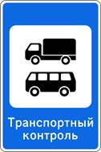
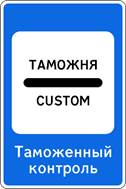

2. Общие обязанности водителей
2.1. Водитель механического транспортного средства обязан:
2.1.1. Иметь при себе и по требованию сотрудников полиции передавать им, для проверки:
· водительское удостоверение или временное разрешение на право управления транспортным средством соответствующей категории или подкатегории;
· регистрационные документы на данное транспортное средство (кроме мопедов), а при наличии прицепа - и на прицеп (кроме прицепов к мопедам);
· в установленных случаях разрешение на осуществление деятельности по перевозке пассажиров и багажа легковым такси, путевой лист, лицензионную карточку и документы на перевозимый груз, а также специальные разрешения, при наличии которых в соответствии с законодательством об автомобильных дорогах и о дорожной деятельности допускается движение по автомобильным дорогам тяжеловесного транспортного средства, крупногабаритного транспортного средства либо транспортного средства, осуществляющего перевозки опасных грузов;
· документ, подтверждающий факт установления инвалидности, в случае управления транспортным средством, на котором установлен опознавательный знак "Инвалид";
· В случаях, прямо предусмотренных законодательством Российской Федерации, иметь и передавать для проверки уполномоченным должностным лицам Федеральной службы по надзору в сфере транспорта карточку допуска на транспортное средство для осуществления международных автомобильных перевозок, путевой лист и документы на перевозимый груз, специальные разрешения, при наличии которых в соответствии с законодательством об автомобильных дорогах и о дорожной деятельности допускается движение по автомобильным дорогам тяжеловесного и (или) крупногабаритного транспортного средства, транспортного средства, осуществляющего перевозки опасных грузов, а также предоставлять транспортное средство для осуществления весового и габаритного контроля.
2.1.1(1). В случаях, когда обязанность по страхованию своей гражданской ответственности установлена Федеральным законом "Об обязательном страховании гражданской ответственности владельцев транспортных средств", представить по требованию сотрудников полиции, уполномоченных на то в соответствии с законодательством Российской Федерации, для проверки страховой полис обязательного страхования гражданской ответственности владельца транспортного средства. Указанный страховой полис может быть представлен на бумажном носителе, а в случае заключения договора такого обязательного страхования в порядке, установленном пунктом 7.2 статьи 15 указанного Федерального закона, в виде электронного документа или его копии на бумажном носителе.
2.1.2. При движении на транспортном средстве, оборудованном ремнями безопасности, быть пристегнутым и не перевозить пассажиров, не пристегнутых ремнями. При управлении мотоциклом быть в застегнутом мотошлеме и не перевозить пассажиров без застегнутого мотошлема.
2.2. Водитель механического транспортного средства, участвующий в международном дорожном движении, обязан:
· иметь при себе и по требованию сотрудников полиции передавать им для проверки регистрационные документы на данное транспортное средство (при наличии прицепа - и на прицеп) и водительское удостоверение, соответствующие Конвенции о дорожном движении, а также документы, предусмотренные таможенным законодательством Евразийского экономического союза, с отметками таможенных органов, подтверждающими временный ввоз данного транспортного средства (при наличии прицепа - и прицепа);
· иметь на данном транспортном средстве (при наличии прицепа - и на прицепе) регистрационные и отличительные знаки государства, в котором оно зарегистрировано. Отличительные знаки государства могут помещаться на регистрационных знаках.
Водитель, осуществляющий международную автомобильную перевозку, обязан останавливаться по требованию уполномоченных должностных лиц Федеральной службы по надзору в сфере транспорта в специально обозначенных дорожным знаком 7.14 контрольных пунктах и предъявлять для проверки транспортное средство, а также разрешения и другие документы, предусмотренные международными договорами Российской Федерации.

Знак 7.14
2.2.1. Водитель транспортного средства, в том числе не осуществляющего международные перевозки товаров, обязан останавливаться и предъявлять уполномоченному должностному лицу таможенных органов транспортное средство, находящиеся в нем товары и документы на них для проведения таможенного контроля в зонах таможенного контроля, созданных вдоль государственной границы Российской Федерации, а в случае, если масса снаряженного указанного транспортного средства составляет 3,5 тонны и более, также на иных территориях Российской Федерации, определенных законодательством Российской Федерации о таможенном регулировании, в местах, специально обозначенных дорожным знаком 7.14.1 , по требованию уполномоченного должностного лица таможенных органов.

Знак 7.14.1
2.3. Водитель транспортного средства обязан:
2.3.1. Перед выездом проверить и в пути обеспечить исправное техническое состояние транспортного средства в соответствии с Основными положениями по допуску транспортных средств к эксплуатации и обязанностями должностных лиц по обеспечению безопасности дорожного движения **.
Запрещается движение при неисправности рабочей тормозной системы, рулевого управления, сцепного устройства (в составе автопоезда), негорящих (отсутствующих) фарах и задних габаритных огнях в темное время суток или в условиях недостаточной видимости, недействующем со стороны водителя стеклоочистителе во время дождя или снегопада.
При возникновении в пути прочих неисправностей, с которыми приложением к Основным положениям запрещена эксплуатация транспортных средств, водитель должен устранить их, а если это невозможно, то он может следовать к месту стоянки или ремонта с соблюдением необходимых мер предосторожности;
** В дальнейшем - Основные положения.
2.3.2. По требованию должностных лиц, уполномоченных на осуществление федерального государственного надзора в области безопасности дорожного движения, проходить освидетельствование на состояние алкогольного опьянения и медицинское освидетельствование на состояние опьянения. Водитель транспортного средства Вооруженных Сил Российской Федерации, Федеральной службы войск национальной гвардии Российской Федерации, инженерно-технических и дорожно-строительных воинских формирований при федеральных органах исполнительной власти, спасательных воинских формирований Министерства Российской Федерации по делам гражданской обороны, чрезвычайным ситуациям и ликвидации последствий стихийных бедствий обязан проходить освидетельствование на состояние алкогольного опьянения и медицинское освидетельствование на состояние опьянения также по требованию должностных лиц военной автомобильной инспекции.
В установленных случаях проходить проверку знаний Правил и навыков вождения, а также медицинское освидетельствование для подтверждения способности к управлению транспортными средствами;
2.3.3. Предоставлять транспортное средство:
· сотрудникам полиции, органов государственной охраны и органов федеральной службы безопасности в случаях, предусмотренных законодательством;
· медицинским и фармацевтическим работникам для перевозки граждан в ближайшее лечебно-профилактическое учреждение в случаях, угрожающих их жизни.
Примечание. Лица, воспользовавшиеся транспортным средством, должны по просьбе водителя выдать ему справку установленного образца или сделать запись в путевом листе (с указанием продолжительности поездки, пройденного расстояния, своей фамилии, должности, номера служебного удостоверения, наименования своей организации), а медицинские и фармацевтические работники - выдать талон установленного образца.
По требованию владельцев транспортных средств органы государственной охраны и органы федеральной службы безопасности возмещают им в установленном порядке причиненные убытки, расходы либо ущерб в соответствии с законодательством.
2.3.4. В случае вынужденной остановки транспортного средства или дорожно-транспортного происшествия вне населенных пунктов в темное время суток либо в условиях ограниченной видимости при нахождении на проезжей части или обочине быть одетым в куртку, жилет или жилет-накидку с полосами световозвращающего материала, соответствующих требованиям ГОСТа 12.4.281-2014.
2.4. Право остановки транспортных средств предоставлено регулировщикам, а также:
· уполномоченным должностным лицам Федеральной службы по надзору в сфере транспорта в отношении остановки грузовых автомобилей и автобусов в специально обозначенных дорожным знаком 7.14 пунктах транспортного контроля;
· уполномоченным должностным лицам таможенных органов в отношении остановки транспортных средств, в том числе не осуществляющих международные перевозки товаров, в зонах таможенного контроля, созданных вдоль государственной границы Российской Федерации, а в случае, если масса снаряженного указанного транспортного средства составляет 3,5 тонны и более, также на иных территориях Российской Федерации, определенных законодательством Российской Федерации о таможенном регулировании, в местах, специально обозначенных дорожным знаком 7.14.1 .
Уполномоченные должностные лица Федеральной службы по надзору в сфере транспорта и таможенных органов должны быть в форменной одежде и использовать для остановки транспортного средства диск с красным сигналом либо со световозвращателем. Для привлечения внимания водителей транспортных средств указанные уполномоченные должностные лица могут пользоваться сигналом-свистком.
Лица, обладающие правом остановки транспортного средства, обязаны предъявлять по требованию водителя служебное удостоверение.
2.5. При дорожно-транспортном происшествии водитель, причастный к нему, обязан немедленно остановить (не трогать с места) транспортное средство, включить аварийную сигнализацию и выставить знак аварийной остановки в соответствии с требованиями пункта 7.2 Правил, не перемещать предметы, имеющие отношение к происшествию. При нахождении на проезжей части водитель обязан соблюдать меры предосторожности.
2.6. Если в результате дорожно-транспортного происшествия погибли или ранены люди, водитель, причастный к нему, обязан:
· принять меры для оказания первой помощи пострадавшим, вызвать скорую медицинскую помощь и полицию;
· в экстренных случаях отправить пострадавших на попутном, а если это невозможно, доставить на своем транспортном средстве в ближайшую медицинскую организацию, сообщить свою фамилию, регистрационный знак транспортного средства (с предъявлением документа, удостоверяющего личность, или водительского удостоверения и регистрационного документа на транспортное средство) и возвратиться к месту происшествия;
· освободить проезжую часть, если движение других транспортных средств невозможно, предварительно зафиксировав, в том числе средствами фотосъемки или видеозаписи, положение транспортных средств по отношению друг к другу и объектам дорожной инфраструктуры, следы и предметы, относящиеся к происшествию, и принять все возможные меры к их сохранению и организации объезда места происшествия;
· записать фамилии и адреса очевидцев и ожидать прибытия сотрудников полиции.
2.6.1. Если в результате дорожно-транспортного происшествия вред причинен только имуществу, водитель, причастный к нему, обязан освободить проезжую часть, если движению других транспортных средств создается препятствие, предварительно зафиксировав любыми возможными способами, в том числе средствами фотосъемки или видеозаписи, положение транспортных средств по отношению друг к другу и объектам дорожной инфраструктуры, следы и предметы, относящиеся к происшествию, и повреждения транспортных средств.
Водители, причастные к такому дорожно-транспортному происшествию, не обязаны сообщать о случившемся в полицию и могут оставить место дорожно-транспортного происшествия, если в соответствии с законодательством об обязательном страховании гражданской ответственности владельцев транспортных средств оформление документов о дорожно-транспортном происшествии может осуществляться без участия уполномоченных на то сотрудников полиции.
Если в соответствии с законодательством об обязательном страховании гражданской ответственности владельцев транспортных средств документы о дорожно-транспортном происшествии не могут быть оформлены без участия уполномоченных на то сотрудников полиции, водитель, причастный к нему, обязан записать фамилии и адреса очевидцев и сообщить о случившемся в полицию для получения указаний сотрудника полиции о месте оформления дорожно-транспортного происшествия.
2.7. Водителю запрещается:
· управлять транспортным средством в состоянии опьянения (алкогольного, наркотического или иного), под воздействием лекарственных препаратов, ухудшающих реакцию и внимание, в болезненном или утомленном состоянии, ставящем под угрозу безопасность движения;
· передавать управление транспортным средством лицам, находящимся в состоянии опьянения, под воздействием лекарственных препаратов, в болезненном или утомленном состоянии, а также лицам, не имеющим при себе водительского удостоверения на право управления транспортным средством соответствующей категории или подкатегории, кроме случаев обучения вождению в соответствии с разделом 21 Правил;
· пересекать организованные (в том числе и пешие) колонны и занимать место в них;
· употреблять алкогольные напитки, наркотические, психотропные или иные одурманивающие вещества после дорожно-транспортного происшествия, к которому он причастен, либо после того, как транспортное средство было остановлено по требованию сотрудника полиции, до проведения освидетельствования с целью установления состояния опьянения или до принятия решения об освобождении от проведения такого освидетельствования;
· управлять транспортным средством с нарушением режима труда и отдыха, установленного уполномоченным федеральным органом исполнительной власти, а при осуществлении международных автомобильных перевозок - международными договорами Российской Федерации;
· пользоваться во время движения телефоном, не оборудованным техническим устройством, позволяющим вести переговоры без использования рук;
· опасное вождение, выражающееся в неоднократном совершении одного или совершении нескольких следующих друг за другом действий, заключающихся в невыполнении при перестроении требования уступить дорогу транспортному средству, пользующемуся преимущественным правом движения, перестроении при интенсивном движении, когда все полосы движения заняты, кроме случаев поворота налево или направо, разворота, остановки или объезда препятствия, несоблюдении безопасной дистанции до движущегося впереди транспортного средства, несоблюдении бокового интервала, резком торможении, если такое торможение не требуется для предотвращения дорожно-транспортного происшествия, препятствовании обгону, если указанные действия повлекли создание водителем в процессе дорожного движения ситуации, при которой его движение и (или) движение иных участников дорожного движения в том же направлении и с той же скоростью создает угрозу гибели или ранения людей, повреждения транспортных средств, сооружений, грузов или причинения иного материального ущерба.